Solution: Dxy = 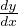 = y(1 -y) ⇔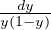 = dx ⇔∫ 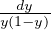 = ∫ dx ⇔ u = 1 -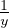 ⇒ -∫ 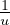du = x + C ⇔-ln|u| = -ln|1 -
 | = x + C ⇔ ln|1 -
| = x + C ⇔ ln|1 - | = -x + C ⇔ Assuming
1 -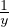 ≥ 0, 1 - = e-x+C ⇔-1 = e-x+Cy - y = y(e-x+C - 1) ⇔ y = 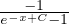
| = -x + C ⇔ Assuming
1 -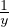 ≥ 0, 1 - = e-x+C ⇔-1 = e-x+Cy - y = y(e-x+C - 1) ⇔ y = 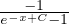
Definition: A differential equation is an equation with an unknown function and it’s derivative(s)
Example 1.0.1: Dxy = 2x + y
Solution: y = ∫
2x + 7dx = x2 + 7x + C
Example 1.0.2: Dxy + y = 7
Solution here is a little more complicated
Definition: A linear first order differential equation is one such that it can be written 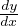 + P(x)y = Q(x)
Example 1.1.1: Dxy = y(1 - y) = y - y2 (the logistic model)
Solution: Dxy = 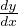 = y(1 -y) ⇔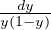 = dx ⇔∫
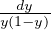 = ∫
dx ⇔ u = 1 -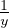 ⇒
-∫
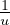du = x + C ⇔-ln|u| = -ln|1 -| = x + C ⇔ ln|1 -| = -x + C ⇔ Assuming
1 -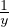 ≥ 0, 1 - = e-x+C ⇔-1 = e-x+Cy - y = y(e-x+C - 1) ⇔ y = 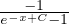
Solving first order linear D.E.s The simplest general method for solving first order linear D.E.s (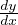 + P(x)y = Q(x)) is to add an additional function μ(x):
And then μ(x) can be plugged back in to find y.
Theorem:
If P,Q are continuous on an open interval, I, containing x0, then the initial value
problem (IVP)  + P(x)y = Q(x), y(x0) = y0 has a unique solution y(x) on I
given by y(x) = e-∫
P(x)dx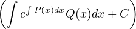 for an appropriate
C
+ P(x)y = Q(x), y(x0) = y0 has a unique solution y(x) on I
given by y(x) = e-∫
P(x)dx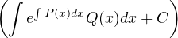 for an appropriate
C
If you have 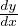 = f(x,y), substitute part of the e.q. with v = α(x,y), and then plug back into the e.q. at the end.
Usually you want to get a linear D.E. relative to v and Dxv (for example Dxv + P(x)v = Q(x) ) which is easier to solve.
Note 1: sometimes a second order D.E. can be reduced into a first order by substituting v = q(Dxy) ⇒ Dxv = w(Dx2y). (e.g. xDx2y + Dxy = Q(x) sub v = Dxy ⇒ Dxv = Dx2y ⇒ xDxv + v = Q(x) is 1st order)
Node 2: you can substitute implicitly (e.g. yDxy + (Dx2y)2 = 0 sub v = yDxy ⇒ Dxv = (Dxy)2+yDx2y ⇒ Dxv = 0 ⇒ yDxy = y = v = c ⇒∫ ydy = ∫ cdx+C)
homogenious equation: An equation of the type: Dxy = F() ⇒ substitute v = ⇒ y = vx ⇒ Dxy = Dx(v)x+v which can be solved by v‘x + v = F(v) ⇒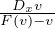 = 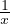
In general f(x,y)dy = g(x,y)dx substitute y = ux ⇒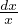 = h(u)du ⇒ integrate.
Bernoulli euquation: An equation of the type: Dxy + P(x)y = Q(x)yn ⇒ substitute v = y1-n ⇒ Dxv = (1 - n)y-nDxy ⇒ Dxv + (1 - n)P(x)v = (1 - n)Q(x)
Remember that n can be negative (for example Dxy + P(x)y = Q(x))
An equation I(x,y) + J(x,y)Dxy = 0 ⇔ I(x,y)dx + J(x,y)dy = 0 is exact iff Iy = Jx. Then ∃ψ(x,y) s.t.
and ψ(x,y) = c is a solution.
For an IVP, given f(a) = b, plugin x = a,y = b into ψ, and solve for c.
An autonomous DE is one such that the independent variable (e.g. x, t) is not in the eq. (e.g. Dxy = P(y)).
An autonomous equation is always seperable
A seperable equation is one of the form Dxy = f(x)g(y). A seperable equation can be solved as follows: Dxy = = f(x)g(y) ⇒∫ 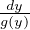 = ∫ f(x)dx + C.
A second order differential equation is a differential equation that includes the second derivative.
A second order constant coefficient homogeneous D.E. is one with the form aDx2y + bDxy + cy = 0.
Theorem (Super Position):
If a second order homogeneous D.E. has 2 solutions a,b, then a + b is also a
solution.
To solve a second order linear constant coefficient homogeneous differential equation
aDx2y + bDxy + cy = 0 let y = erx. Then by plugging in we get:
which can be solved for r = r1,r2 ⇒ y = Aerx + Berx ∀A,B by super position. If there is a repeated root (r1 = r2), than let y = Aerx + Bxerx, plug in, and solve.
Let Dx2y + p(x)Dxy + q(x)y = g(x) be the 2nd order non-homogeneous D.E. For simplicity, let L[y] = Dx2y + p(x)Dxy + q(x)y (so the D.E. is L[y] = g(x) ). Then the solution is of the form y = (c1y1 + c2y2 = yh) + yp where yh is the solution to L[y] = 0. To find yp there is really two methods:
Refer to the following table to find the general equation for yp based on g(x):
| g(x) | yp |
| Pn(x) | tsQn(x) |
| Pn(x)eαx | tsQn(x)eαx |
| Pn(x)eαx(sinβt + cosβt) | tseαx(Qn(x)sinβx + Rn(x)cosβx) |
Where s is the smallest integer ≥ 0 s.t. yp is not a solution to L[y] = 0 and
Pn(x),Qn(x),Rn(x) are polynomials of degree n.
Then plug into L[yp] = g(t) and solve for the coefficients.
Given yh = c1y1 + c2y2 we wantto find u1,u2 s.t. Dx(u1)y1 + Dx(u2)y2 = 0 and Dx(u1)Dx(y1) + Dx(u2)Dx(y2) = g(x). We can find precise values using the Wronskian.
Definition: The Wronskian of two functions w(f,g) is defined as w(f,g) := 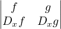
Lemma: If w(f,g) ≡ 0 (w(f,g)(x) = 0,∀x), then f,g are linearally dependent. If w(f,g) ⁄≡ 0 (∃x s.t. w(f,g)(x)≠0), then f,g are linearally independent.
Then Dxu1 = 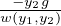 and Dxu2 = 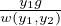. This tells us that yp = u1y1 + u2y2 (notice that u1,u2 are not derivatives).
Where x0 is a convenient point int the interval I in which y1,y2 are defined.
A nth order differential equation is (as the name implies), a differential equation that includes derrivatives of n orders.
A nth order constant coefficient homogeneous D.E. is one with the form
a0Dxny + a1Dxn-1y +  + an-1Dxy + any = 0.
+ an-1Dxy + any = 0.
To solve, by following the same procedure as for the 2nd order parallel, let
y = erx ⇒ a0rn + a1rn-1 +  + an-1r + an = 0, and solve.
+ an-1r + an = 0, and solve.
Definition:
A system of first order differential equations is defined as such:
Dtxi = ∑
j=1n(Pij(t)xj) + gi(t) for 1 ≤ i ≤ n ⇔ Dt = 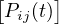ij
= 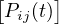ij = 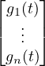
= 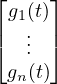
A system of first order D.E.s is homogeneous if gi(t) = 0,∀t.
Theorem:
If {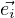} is a standard basis for ℜn,  is a solution to the homogeneous system
with the initial condidtion 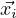(t0) = then {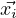} is the fundimental solution
set.
is a solution to the homogeneous system
with the initial condidtion 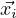(t0) = then {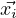} is the fundimental solution
set.
For a homogeneous system, you have Dx = A
= A . If you can find the eigenvalues
λ1,
. If you can find the eigenvalues
λ1, ,λn and eigenvectors 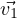,
,λn and eigenvectors 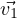, ,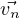, then
,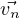, then  = ∑
i=1ncieλi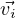
= ∑
i=1ncieλi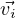
If there are repeated eigenvalues, solve for the known one like normal: (In this
example I’m just showing for a system of two, but it extends)  = 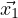 + 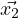,
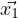 = c1eλ1t, let = 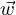tet ⇒ Dt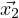 = (et + tet). Then plug back into initial D.E.,
and solve for
= 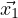 + 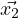,
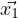 = c1eλ1t, let = 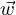tet ⇒ Dt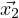 = (et + tet). Then plug back into initial D.E.,
and solve for  .
.
Given a second order, often you can convert to a system of first orders, or vice versa. This is done by assigning the variables in the system to be different level derivatives.
Example 4.1.2.1: aDx2x + bx = 0 ⇒ let x1 = x,x2 = Dxx ⇒ Dxx2 = 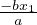,Dxx1 = x2
You can also go from multiple of a higher order to lower orders:
Example 4.1.2.2: For two second orders we define y1 = x1, y2 = Dxx1, y3 = x2, y4 = Dxx2
Consider DtX = AX ∀X ∈ Mn×n(S). If  = c1 + c2
= c1 + c2 +
+  + cn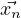 (means
+ cn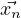 (means
 = eλit most likely) is a solution to Dt
= eλit most likely) is a solution to Dt = A
= A , then there is a solution
X = Φ(t) = 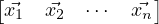 where are the columns of the matrix. If there is
an initial condition
, then there is a solution
X = Φ(t) = 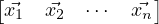 where are the columns of the matrix. If there is
an initial condition  (0) = 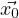 then Φ(t)
(0) = 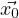 then Φ(t) =
=  ⇔
⇔ = Φ-1(t)
= Φ-1(t)
Then to solve DtX = AX,  (0) =
(0) =  , we have
, we have  (t) = Φ(t)Φ-1(0)
To solve DtX = AX, we really want X = eAt. We know
ex = ∑
n=0∞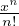 ⇒ eA = ∑
n=0∞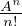 ⇒ eAt = ∑
n=0∞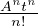
(t) = Φ(t)Φ-1(0)
To solve DtX = AX, we really want X = eAt. We know
ex = ∑
n=0∞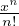 ⇒ eA = ∑
n=0∞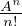 ⇒ eAt = ∑
n=0∞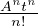
Note 4.1.3.1:
If AB = BA, eA+B = eAeB;(eA)-1 = e-A;e0∈Mn×n(S) = I
If A = diag(a1,a2, ,an) then eA = diag(ea1,ea2,
,an) then eA = diag(ea1,ea2, ,ean)
If A = SDS-1 for a diagonal D then eA = SeDS-1.
if A is non-diagonalizable, then cehck if there is n s.t. An = 0. If so, than a
polynomial can be constructed from eA = ∑
i=0n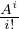 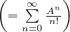
,ean)
If A = SDS-1 for a diagonal D then eA = SeDS-1.
if A is non-diagonalizable, then cehck if there is n s.t. An = 0. If so, than a
polynomial can be constructed from eA = ∑
i=0n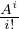 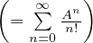
Example 4.1.3.2
For A = 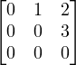, A2≠0, A3 = 0 ⇒ eA = ∑
i=02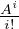 = (A0 = I) + A +  A2
A2
Note 4.1.3.3: If AB = BA, C = A + B then eCt = eAteBt. Note that if A = nI, AB = nIB = nB = Bn = BnI = BA.
Thus the solution to Dt = a
= a ,
,  (0) = 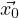 is
(0) = 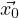 is  (t) = eAt
(= Φ(t)Φ-1(0)
(t) = eAt
(= Φ(t)Φ-1(0) ⇒ eAt = Φ(t)Φ-1(0)
⇒ eAt = Φ(t)Φ-1(0) )
)